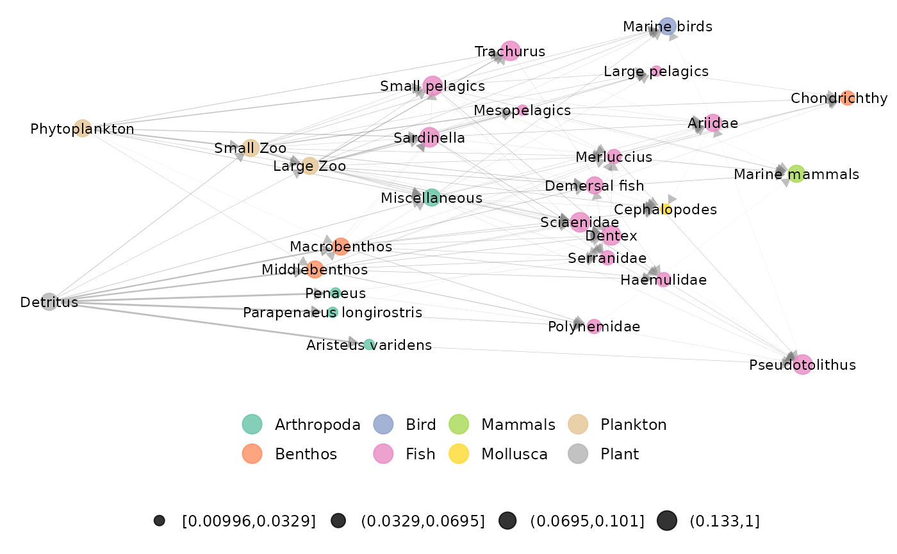
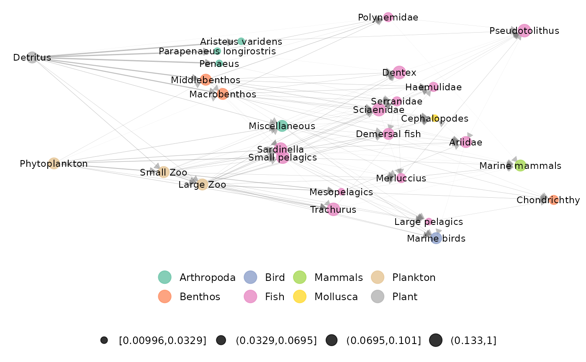

Function that provides network static representation (using 'ggnet') from a 'metanetwork' object using 'TL-tsne' or 'group-TL-tsne' layout.
ggmetanet(
metanetwork,
g = NULL,
beta = 0.1,
legend = NULL,
mode = "TL-tsne",
edge_thrs = NULL,
layout_metaweb = FALSE,
nrep_ly = 1,
flip_coords = FALSE,
diff_plot_bool = FALSE,
alpha_per_group = NULL,
alpha_per_node = NULL,
alpha_interactive = FALSE,
ggnet.config = ggnet.default,
TL_tsne.config = TL_tsne.default
)Arguments
- metanetwork
object of class metanetwork
- g
network (igraph object) to represent, default is metaweb
- beta
the diffusion parameter of the diffusion kernel, a positive scalar controlling the vertical squeezing of the network
- legend
resolution for the legend, legend resolution must be a coarser resolution than the resolution of g, default is NULL
- mode
mode used for layout, 'TL-tsne' or 'group-TL-tsne' Default is 'TL-tsne'. This argument can also be a two-column matrix for custom layout.
- edge_thrs
if non-null, a numeric (between 0 and 1) indicating an edge threshold for the representation
- layout_metaweb
a boolean indicating whether the layout of the metaweb should be used to represent the network to use metaweb layout = TRUE, you need first to compute metaweb layout for this beta value using
attach_layout()- nrep_ly
If several layouts for this beta value are attached to the metaweb (if
layout_metaweb = T), index of the layout to use, seeattach_layout()- flip_coords
a boolean indicating whether coordinates should be flipped.
- diff_plot_bool
boolean, do not edit by hand
- alpha_per_group
controlling alpha per group (only for 'ggnet' vis), a list of format
list(resolutions = "XX",groups = XX,alpha_focal = XX,alpha_hidden = XX), see example- alpha_per_node
controlling alpha per node (only for 'ggnet' vis), a list of format
list(nodes = XX,alpha_focal = XX,alpha_hidden = XX), see example In that case, y-axis is the trophic level and x-axis is the layout axis- alpha_interactive
a boolean indicating whether alpha (that is node transparency) should be asked in interactive mode to the user
- ggnet.config
configuration list for ggnet representation, default is ggnet.default
- TL_tsne.config
configuration list for mode 'TL-tsne', default is TL_tsne.default
Value
an object of class ggplot, the current network representation
Details
At each call of the function with 'TL-tsne' layout, it computes a layout for the current beta value. If a layout is already attached to the current network, it uses directly this layout (without computing). This function provides many static visualisation tools:
customising ggnet parameters wrapped in
ggnet.configlegending using the trophicTable
playing on group transparency (alpha)
using the metaweb layout
building a legend for large networks.
See also
Examples
library(metanetwork)
library(igraph)
#lattice example
g = make_lattice(dim = 2,length = 4,directed = TRUE)
#building metanetwork and computing trophic levels
meta0 = build_metanet(g)
#> Warning: nodes of metaweb do not have names. Assigning integers as names
meta0 = compute_TL(meta0)
ggmetanet(meta0)
#> mode is TL-tsne
#> beta = 0.1
#> Epoch: Iteration #100 error is: 431.402455891917
#> Epoch: Iteration #200 error is: 101.980051215627
#> Epoch: Iteration #300 error is: 101.980051216652
#> Warning: node.size is invariant; size.cut ignored

#storing layout
meta0 = attach_layout(meta0)
#> attaching TL-tsne layout for metaweb_
#>
#> beta = 0.1
#> beta = 0.1
#> Epoch: Iteration #100 error is: 431.402455891916
#> Epoch: Iteration #200 error is: 101.98005121792
#> Epoch: Iteration #300 error is: 101.980051216652
ggmetanet(meta0)
#> mode is TL-tsne
#> Warning: node.size is invariant; size.cut ignored

#custom ggnet parameters
ggnet.custom = ggnet.default
ggnet.custom$label = TRUE
ggnet.custom$edge.alpha = 0.5
ggnet.custom$alpha = 0.7
ggnet.custom$arrow.size = 1
ggnet.custom$max_size = 12
# using pre-computed layout and custom ggnet parametersfor vertebrates metaweb
data("meta_vrtb")
#custom ggnet parameters
ggnet.custom = ggnet.default
ggnet.custom$label = TRUE
ggnet.custom$edge.alpha = 0.5
ggnet.custom$alpha = 0.7
ggnet.custom$arrow.size = 1
ggnet.custom$max_size = 12
#at SBM group level
beta = 0.005
ggmetanet(meta_vrtb,g = meta_vrtb$metaweb_group,flip_coords = TRUE,
beta = beta,legend = "group",
ggnet.config = ggnet.custom,edge_thrs = 0.1)
#> mode is TL-tsne
#> too many groups, assigning colors and shapes